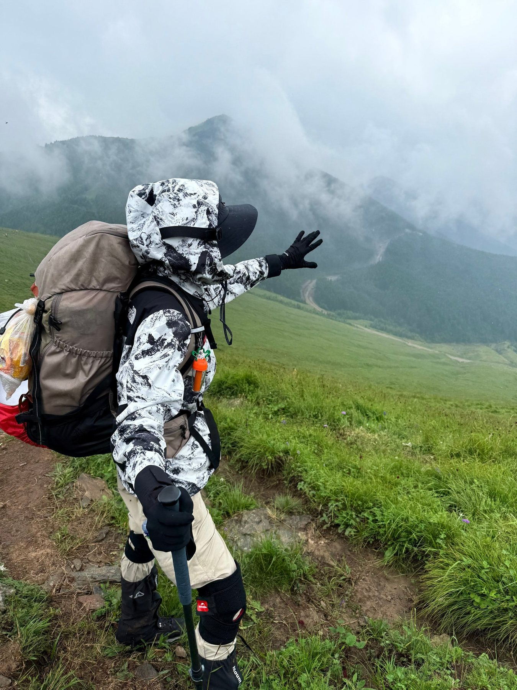
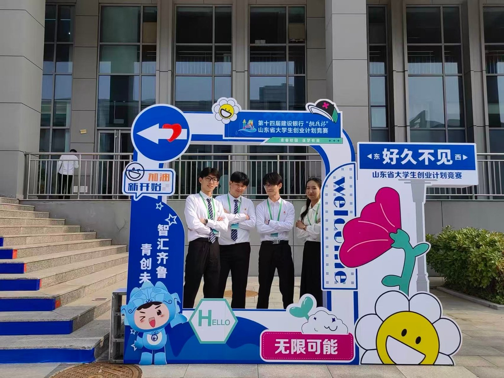
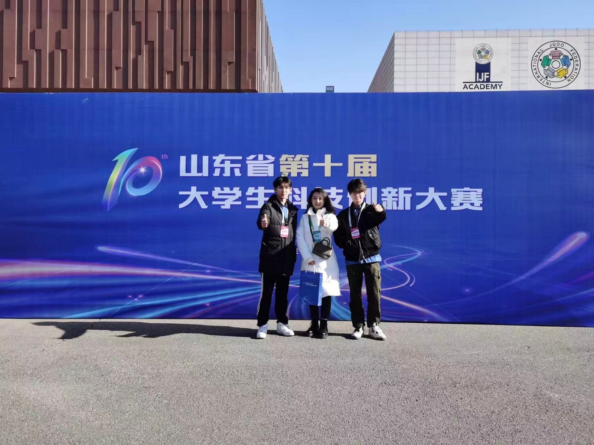
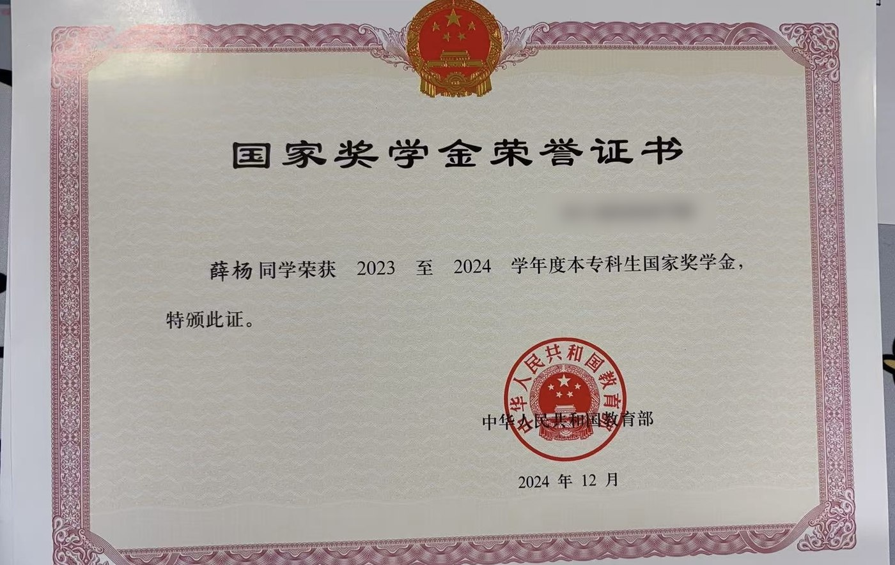
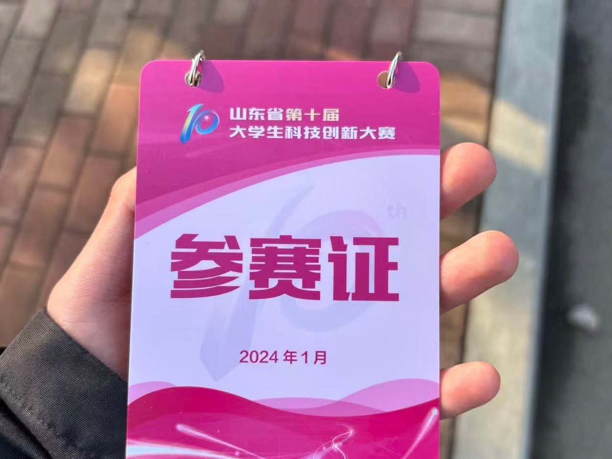
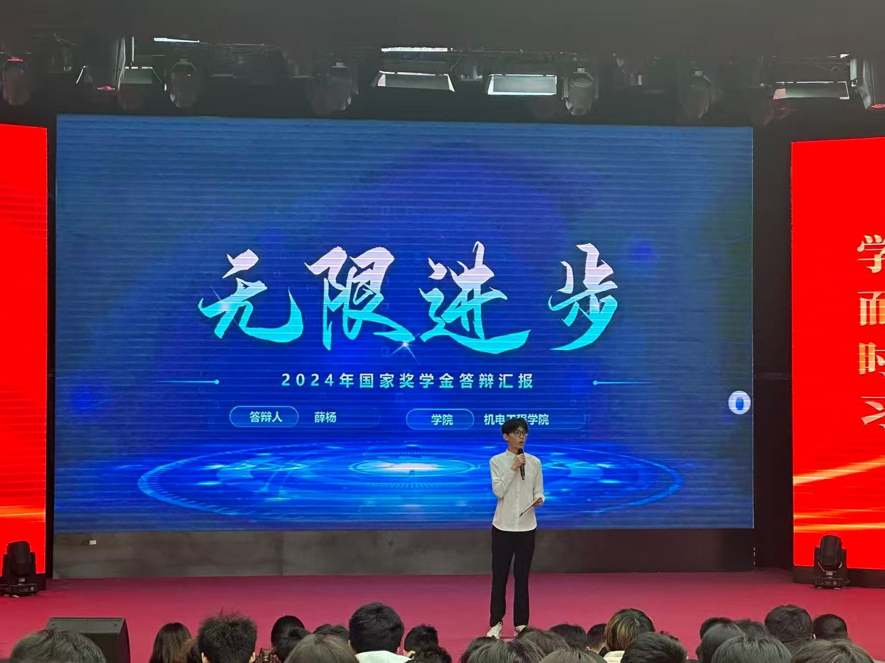
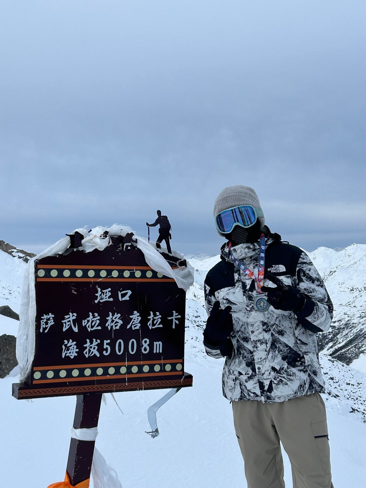
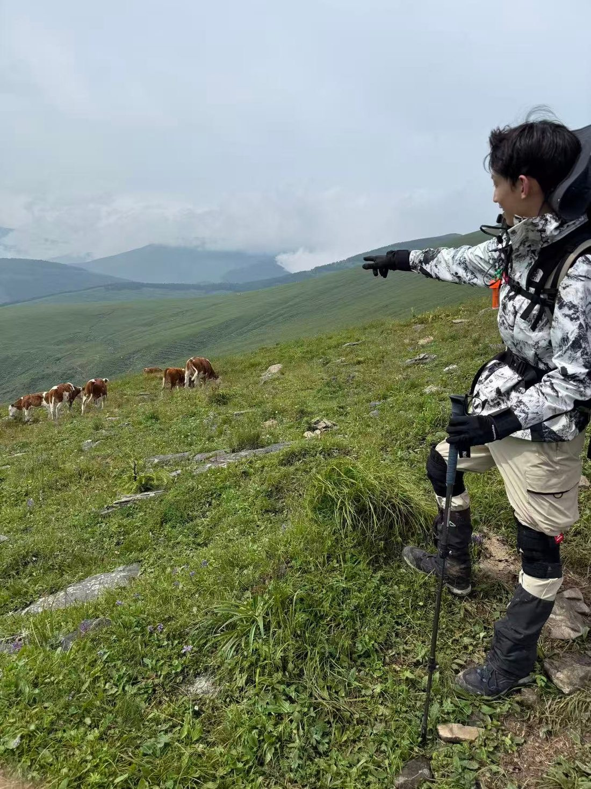
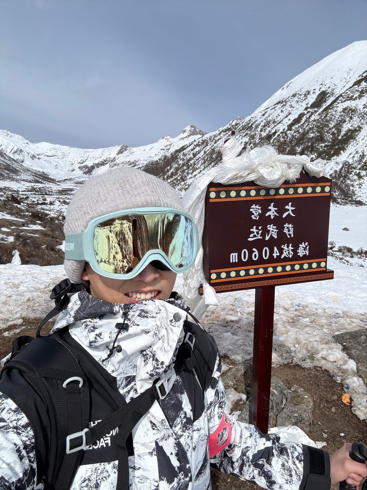
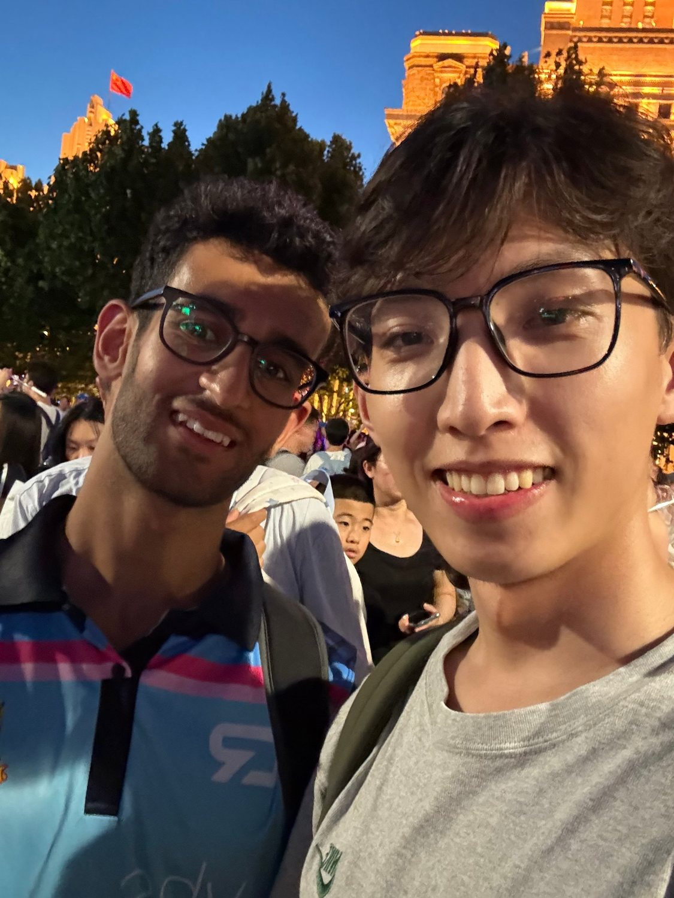

向外输出
课堂上一百多课时，路演台上八分钟，电话里无数遍产品逻辑。表达是我最顺手的工具，也是我理解世界的方式。
2027 届 · 秋招进行中/机械设计制造及其自动化
我是薛杨，一名从智能控制走向机械设计的工科生。 做过手语翻译的样机、打通过多品牌机器人的协议，也在 5008 米的垭口学会了等待。
山野
“向上，
是一件很慢的事。”
背包里装着四天的补给，脚下是能见度不到二十米的雾。山不会因为你准备好就变低，但你可以走得更稳。

01关于我
我是个习惯向外输出的人：对生活有热情，对未知有好奇，喜欢把想法讲清楚，也喜欢把事做成。
机械是我的专业底色——从智能控制技术到机械设计制造及其自动化，一路从“会操作”走向“会设计、会验证”。 AI 是我近两年最上心的工具：从刀具模型预测这样的工程问题，到把 Agent 接进日常的工作流，我更在意它能不能真的省下时间、解决具体的问题。
缺点我也清楚：需要更多耐心——多听、多看、多学、多等待。很多事情不是不够努力，而是还没走到量变转质变的那个点。 学会等待，是我这两年最重要的功课。
独处、复盘、规律的作息与运动，是我长期在做的“内功”。我希望生活有多个支点：专业、身体、审美、关系。 支点够多，人才稳。
薛杨 Xue Yang
齐鲁理工学院 · 机械设计制造及其自动化
求职方向：To B 销售工程师 / 售前技术支持
课堂上一百多课时，路演台上八分钟，电话里无数遍产品逻辑。表达是我最顺手的工具，也是我理解世界的方式。
独处、反思、写下来。长期保持作息与运动，把状态当作一种可以训练的能力，而不是靠运气的天赋。
5000 米不是一次冲顶，是提前几个月的准备、配速，和在风雪里判断“该撤就撤”的克制。
02成长轨迹
左边是学历与成绩，右边是实习、学生工作与项目。 两条线并行：一条让我把东西想明白，一条让我把事做成、把人带起来。
2025.09 — 2027.06
齐鲁理工学院 / 智能制造与控制工程学院
2022.09 — 2025.06
山东理工职业学院 / 机电工程学院
2026.07 — 2026.09
普为（上海）新材料科技有限公司
2025.05 — 2025.07
临沂希麦机器人技术服务有限公司
2023.02 — 2023.12
机电工程学院学生委员会
03项目与实践

省级银奖2024 · 山东省第十四届“挑战杯”大学生创业计划竞赛 · 项目负责人
提出“双屏交互 + CNN 手语识别算法”方案，统领跨专业团队推进研发；主导初代工程样机机械结构搭建、软硬件联调与识别精度优化；负责商业计划书撰写与路演答辩，最终代表学校获全省银奖。

省级金奖2024 · 山东省第十届大学生科技创新大赛 · 核心成员
基于 PLCnext 平台与 OPC-Server 工业协议，打通异构多品牌机器人的数据互联与协议兼容；用 C 语言与梯形图编写控制逻辑，引入路径优化算法提升多轴协同节拍；梳理技术优势、编制方案文档，助力项目获省科创大赛金奖。
2026.07 — 2026.09
涂料助剂应用测试与 COA 指标检测；ERP 系统数据录入；跟随销售总监理解 To B 工业品的决策链与商务表达，建立“以技术底子支撑前端业务”的认知。
2025.05 — 2025.07
青少儿编程与硬件课程授课，累计 100+ 课时；参与教学体系优化；负责学情沟通，提升课程续费率与转介绍率。
04能力
我不迷信工具，但我愿意把好工具用到极致。下面这四件事不是并列的四个模块，而是一个闭环——每做完一个项目，都会回到起点，但站得更稳。
把想法画成能制造的图
挑战杯工程样机 · 课程设计让设备按逻辑动起来
PLCnext 多品牌机器人平台把重复的判断交给工具
刀具模型预测 · Agent 工作流让团队愿意跟着做
路演答辩 · 100+ 课时 · 3 届活动每一轮回到起点，但站得更高一点
控制让我理解设备怎么动，机械让我理解它为什么这么设计——两件事合起来，我才敢说“这个结构能加工、这套逻辑能跑通”。
AI 把重复的判断交给工具，让我有更多时间想清楚问题；沟通，是把这些判断讲给别人听、让团队愿意一起做的最后一公里。
四件事没有先后。每做完一个项目，都会回到起点，只是这一次站得更稳。
SolidWorks · AutoCAD · 零件建模 · 工程图 · 三维 / 平面视觉
PLC 梯形图 · OPC UA / OPC-Server · 工业通信协议 · C 语言 · PLCnext
Python / Jupyter · MySQL · 机器学习建模
ChatGPT · Gemini · Claude · Codex · DeepSeek · WorkBuddy
CET-4 · 全国计算机二级 · 心理学应用
05荣誉与证明
以上材料均可提供原件与扫描件备查，证书编号已做隐藏处理；另有院系级竞赛一等奖 / 二等奖、志愿服务证明若干。



06山野与生活
5008 米的萨武垭口、4060 米的大本营、五台山的长线、上海外滩的夜。 这些不是为了证明什么，而是提醒我：人可以在不舒服里待很久，并且依然保持体面和好奇。




07三句话
“坚持是世界上最伟大的品质。”
初中班主任
“在社会中一定要坚持做事情，做一个好人。”
高中班主任
“机会只会出现在你浩瀚人生长河中的一个片段。”
大学辅导员
我最初并不理解这些话。直到我发现，当我专注于自己、沉浸在自己里的时候，提升的已经不只是技能和学识。 那些我迫切想要的环境和资源，都埋在“坚持做自己、坚持做事情、坚持培养自己的磁场”里。 坚持不只是字面上的意思，它是知行合一，是自己对自己的责任。
08联系
正在寻找 To B 销售工程师 / 售前技术支持 方向的机会，同时开放机械设计、工业自动化相关岗位。 也欢迎聊聊岗位、AI 工具，或者任何你觉得有意思的事。